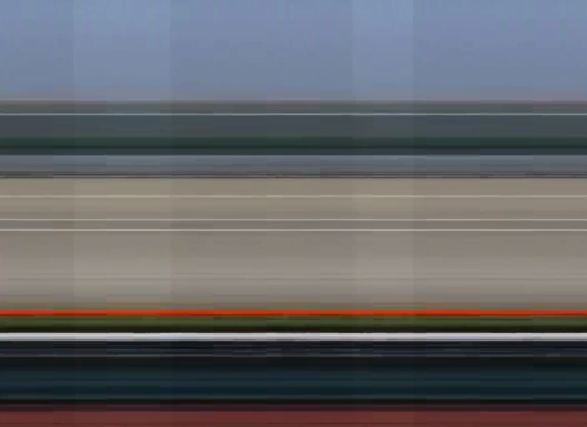
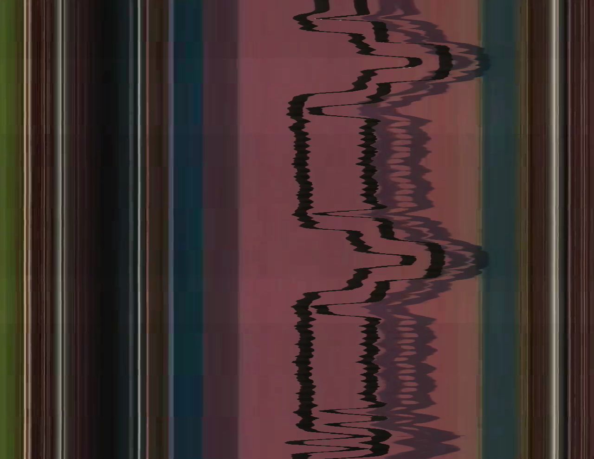
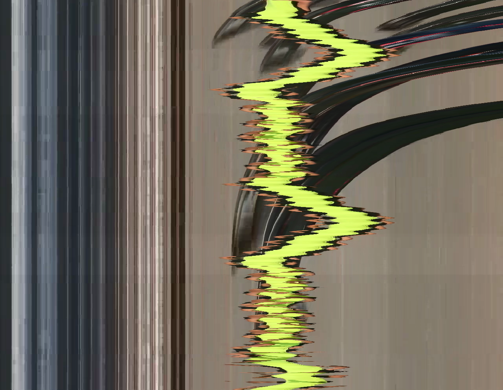
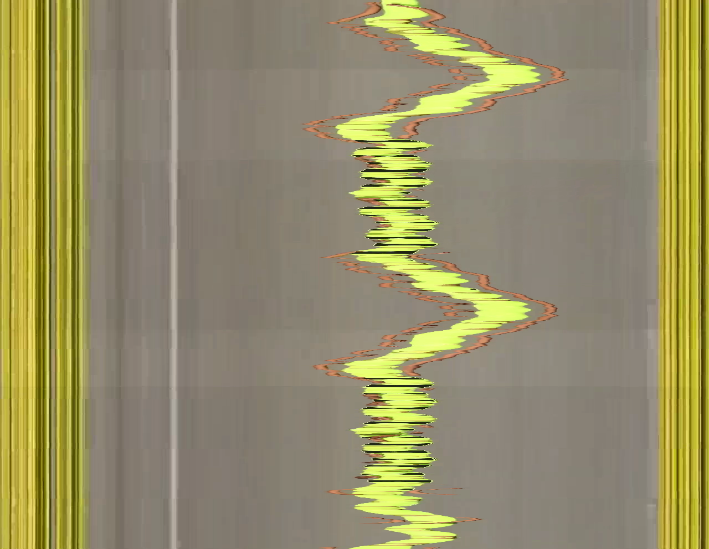
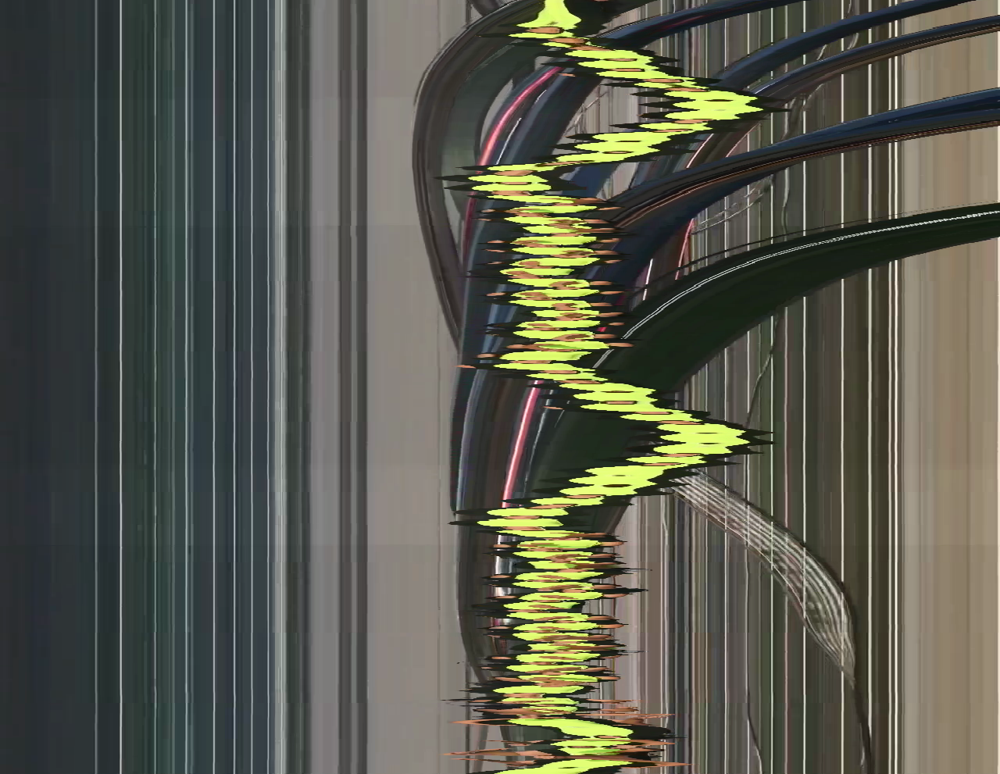

slitscan is a command-line tool for editing time in videos. It collects
historic slit-scan techniques into a single toolkit. In a stroke of
inspiration, I had the idea that every variable could also be mapped to
an LFO, like on a modular synthesizer.
Picture a video as a solid block. Width is X, height is Y, and the frames
stack up behind each other along a third axis, time. Normal playback cuts
the block straight across, one flat slice per frame, so every pixel in the
slice is from the same moment.
slitscan cuts the block at an angle or along a curve. Each column of the
output comes from a different depth in time. The profile sets the shape
of the cut, and the cut moves forward one frame for each output frame.
The whole engine is one function, evaluated for each output frame:
Source frame
source_frame(x, output_t) = output_t − delay[x] x band index (0 … width-1) output_t current output frame delay[x] frames behind the vanguard for band x (always ≥ 0) vanguard the band with delay=0, reading the newest input frame
The vanguard edge (delay 0) shows the present.
The lagging edge (delay = max_delay) shows the oldest frame.
Read one output frame from left to right and you are reading
backward through the clip.
input frames: ←──── time ────→
[t-N] ... [t-2] [t-1] [t]
output frame at time t:
col 0 (vanguard) ← from frame t (delay=0)
col 1 ← from frame t-1 (delay=1)
col 2 ← from frame t-2 (delay=2)
...
col W-1 (lagging) ← from frame t-(W-1) (delay=W-1)
Profiles and oscillators are pure functions. A static render, an animated sweep and an LFO-modulated surface all go
through the same render code. The engine can't tell them apart.
Profiles
A profile is a pure function delay_map(x_coords, output_t, params) → ndarray
that gives each band a delay. Version 1 has three.
The vanguard position (0.0 to 1.0) sets which part of the frame shows the present.
Profile
Delay surface shape
Character
ramp
Rises in a straight line from the vanguard to the far edge
The classic rake. One edge leads, the other lags.
tent
Delay peaks at center, falls to zero at both edges
A fold. Both edges show now and the center shows the oldest frame, so the image is mirrored in time.
reverse
Mirror of ramp (vanguard on opposite side)
The rake, flipped. The right edge leads. Handy for comparing direction side by side.
ramp · default
Left edge reads frame t, right edge reads t − 1279. The dancer shears into a diagonal.
slitscan render 2020.mp4 out.mp4
tent
Both edges read the present and the center reads furthest back. Left and right mirror each other.
slitscan render 2020.mp4 out.mp4 --profile tent
reverse · max-delay 150
The ramp flipped, with a spread of only 150 frames. The right edge leads.
On the default axis, x, bands are columns and delay changes
from left to right. --axis y makes bands rows, with delay
changing from top to bottom. The formula is the same, turned 90°.
axis x (default)
Column bands. Sideways motion shears the figure across the width.
slitscan render 2020.mp4 out.mp4 --axis x
axis y · ramp
Row bands. Up-and-down motion, like the dancer's arms and legs, shears from top to bottom.
slitscan render 2020.mp4 out.mp4 --axis y
axis y · tent
Tent on the y axis. The top and bottom rows show now, and the middle rows show the oldest frames.
slitscan render 2020.mp4 out.mp4 --axis y --profile tent
axis y · tent · wrap
The same with --fill wrap. The black zones at the clip boundaries are gone and it loops cleanly.
slitscan render 2020.mp4 out.mp4 --axis y --profile tent --fill wrap
Max delay
--max-delay N sets how many frames separate the vanguard and lagging
edges. The default is extent − 1, the full width or height in pixels.
Lower it to squeeze the window. Raise it to reach further back.
This source is 1280px wide at 30fps, so the default of 1279 frames puts
42.6 seconds of footage in one output frame. At 300 frames (10s) the
dancer stays mostly in one piece, with small seams where the motion changes.
max-delay 300 frames (~10s)
A short window. You can still make out the figure, slightly sheared.
slitscan render 2020.mp4 out.mp4 --max-delay 300
max-delay 900 frames (~30s)
The trailing edge is 30 seconds behind the leading edge.
slitscan render 2020.mp4 out.mp4 --max-delay 900
max-delay 1279 (full extent, default)
Every column reads a different frame. All 992 frames of the clip fit in one output frame.
Each band is 1 pixel wide by default, which gives a smooth gradient.
A larger --slice-width groups columns into wider bands that
share one source frame, so you can see the steps.
Wide bands show how the effect works. Each block is a strip cut from one
frame and set next to strips from other frames. At --slice-width 1
each strip is a single column and the seams vanish.
slice-width 1 (default)
1280 columns, each from its own frame.
slitscan render 2020.mp4 out.mp4
slice-width 40
32 bands of 40px. You can see the seams, and each band shows its own frame.
When a band asks for a frame before the first or after the last,
the fill mode decides what it shows. There are five: black,
white, transparent, hold and wrap.
Use wrap for loops.
Mode
Out-of-range behavior
Use case
black
Solid black pixel
Default. The clip boundary shows up as a black zone that sweeps across the frame.
white
Solid white pixel
Like black, for light compositions.
transparent
Alpha=0 pixel (RGBA output)
Compositing. Needs .mov (ProRes 4444) or a .png/.tiff sequence.
hold
Clamp to first/last frame
Freezes on the first or last frame. No black zones, no loop.
wrap
frame_index % frame_count
Loops. Indices past either end wrap around, so the output repeats with no seam.
How wrap looping works
At the start of the clip the lagging bands ask for negative frames. With
--fill black that shows as a black zone sweeping from right to left.
With --fill wrap those indices become index % 992,
which joins the end of the clip to its start. The output has no seam.
Some of the black in the --fill black examples comes from the
footage itself. The clip opens and closes on near-black frames, which makes
the boundary easy to follow here.
fill black (default)
The black zone sweeps left as the clip plays and resets at the end.
--fill black
fill wrap
Same settings. Every band always has footage, and the loop point is invisible.
--fill wrap
wrap loop
Wrap fill, full width. No black zone and no visible loop point.
slitscan render 2020.mp4 out.mp4 --fill wrap
Modulation
An oscillator can drive any render parameter over the course of the output.
Before each frame the engine works out the new values, then runs the same
formula as before.
Modulation formula
resolved(t) = base + offset + depth × osc(2π · cycles_per_frame · t + phase)
dest target parameter: vanguard | max_delay | slice_width osc oscillator: sine | triangle rate units hz (cycles/sec), cyc (cycles/clip), frames (period in frames)
Write patches inline with --mod or put them in a YAML file
for --mod-file. You can stack several on one destination.
# Oscillate the vanguard position with a 0.1 Hz sine, ±0.4 amplitude
slitscan render 2020.mp4 out.mp4 \
--profile tent \
--mod "vanguard=sine:rate=0.1hz,depth=0.4"# Oscillate max_delay (temporal spread breathes in and out)
slitscan render 2020.mp4 out.mp4 \
--mod "max_delay=sine:rate=0.25hz,depth=400"# Both at once
slitscan render 2020.mp4 out.mp4 \
--profile tent \
--mod "vanguard=sine:rate=0.1hz,depth=0.4"\
--mod "max_delay=sine:rate=0.05hz,depth=300"
Oscillating max delay
max delay LFO · sine · 0.25 Hz · depth 400
The window widens and narrows on a sine. At its narrowest the image is almost a single moment.
On the y axis the moving vanguard sends the fold up and down the frame, across the dancer's vertical movement.
--axis y --mod "vanguard=sine:rate=0.1hz,depth=0.4"
axis y · vanguard LFO · wrap
--axis y --mod "vanguard=sine:rate=0.1hz,depth=0.4" --fill wrap
Grid
Plain slit-scan cuts the frame into bands along one axis. Grid mode
cuts it into a COLS×ROWS mosaic and gives every cell its own
source frame, and the whole mosaic moves as the clip plays. Nx1 is the
same as column bands and 1xN the same as row bands.
Grid: source frame per cell
1D band: source(band, t) = t − delay[col]← one band spans the full height2D grid: source(cell, t) = t − delay[row, col]← each tile gets its own frame
By default the engine runs --profile across the columns and across
the rows, then merges the two with --grid-combine (avg,
max, min or multiply). Average two ramps and you
get a diagonal. Read it corner to corner and you go through the whole clip.
The parkway doesn't move, so it stays whole. The figure breaks up tile by tile.
Grid size
The same diagonal each time (ramp, averaged, with --fill wrap
so no tile goes black). Only the tile count changes. A coarse grid shows a few
moments. A fine one gets close to a smooth gradient.
2 × 2
Four moments, one per quadrant. The figure splits at the seams.
The field doesn't have to be a ramp. A tent merged with
max puts the vanguard (delay 0, the present) in the center
and gets older toward the corners, in rings.
10 × 10 · tent · combine max
The center tiles show the present and the corners show the past. When the figure crosses the center it is current, and its echoes trail at the edges.
The oscillators from Modulation work on the grid too. Here
their phase follows the cell's position instead of output time. Each
--grid-mod runs along col or row, with
rate counted in cycles across that axis. The engine adds them up and
scales the sum to --max-delay.
# One sine across the columns → vertical stripes
slitscan render 2020.mp4 out.mp4 --grid 16x16 \
--grid-mod "col=sine:rate=2,depth=1" --max-delay 400 --fill wrap
# A sine on each axis → plaid
slitscan render 2020.mp4 out.mp4 --grid 16x16 \
--grid-mod "col=sine:rate=2,depth=0.5"\
--grid-mod "row=sine:rate=2,depth=0.5" --max-delay 400 --fill wrap
col sine · rate 2 · depth 1
One oscillator across the columns. Each column of tiles gets a delay from the sine, so the delay waves from left to right.
Use two --grid-mods, one on col and one on row,
and each cell gets their sum. Rate, waveform, phase and depth can differ per axis.
The sum clamps to [0, max-delay]. High depths on both give flat
plateaus with hard edges. Low depths stay smooth.
# Two oscillators, one per axis
slitscan render 2020.mp4 out.mp4 --grid 24x24 \
--grid-mod "col=sine:rate=4,depth=0.5"\# fast columns
--grid-mod "row=sine:rate=1,depth=0.5"\# slow rows
--max-delay 400 --fill wrap
cross rates · col 4 / row 1
Fast columns over a slow row gradient. Vertical bands drift from top to bottom.
The source-frame formula, fill
modes and oscillators are the same. The only change is that it gathers tiles
instead of bands. Two --grid-mod entries add up per cell the way two
--mod entries add up for bands. Any cell can ask for any frame, so grid
mode always keeps the whole clip in memory.
Collapse
collapse records one slit over the whole clip and saves it
as a single image. Each frame adds one column (or row) from the slit
position, so time runs across the image and space runs down it.
Photo-finish cameras work the same way. Still things come out as straight
streaks. Things that move through the slit come out as shapes.
Collapse: output pixel
output[t, y] = input[t][y, slit_x]axis x: one column per frameoutput[x, t] = input[t][slit_y, x]axis y: one row per frame
output width = frame_count (992 pixels, one per frame)
output height = source height (720px) or width (1280px)
Axis x, vertical slit
Each image is 992 pixels wide, one column per frame, and 720 tall.
The slit position picks which column of the source frame gets recorded.

slit-position 0.2 · left
The edge of the parkway. Little moves here, and parked cars leave faint stripes.
--axis y records rows instead of columns. The output is 1280
pixels wide and 991 tall, one row per frame. The slit position now picks a
height in the frame, like the feet, waist or chest, and each part of the
body leaves a different trace.

axis y · slit at feet
Fast steps leave a tight, quick trace.
--axis y --slit-position 0.85

axis y · slit at waist
Slower side-to-side hip motion. The wave keeps time with the choreography.
--axis y --slit-position 0.65

axis y · slit at mid-body
Hip sway and arm movement mixed together.
--axis y --slit-position 0.5

axis y · slit at upper body
Arms and shoulders cover more ground than the lower body, and the trace is busier.
--axis y --slit-position 0.25
GIF output
Give the output a .gif extension and the encoder switches to
Pillow's palette quantizer, with 256 colors per frame, Floyd-Steinberg
dithering and looping on. You don't need any flags.
Each frame gets its own 8-bit palette. At full resolution the files are big, so use
--resize and --fps for anything going on the web.
# The extension sets the format
slitscan render 2020.mp4 out.gif --fill wrap
slitscan render 2020.mp4 out.gif --fill wrap --resize 640x360 --fps 15
ramp · wrap · gif
The ramp as a looping GIF. At full size you can see the dithering.
slitscan render 2020.mp4 out.gif --fill wrap
tent · vanguard LFO · wrap · gif
The moving tent. The palette flickers at the peaks.
The y axis as a GIF. The palette makes the row bands stronger.
slitscan render 2020.mp4 out.gif --axis y --fill wrap
Fixed slit
In plain slit-scan, output column x comes from column x of its source frame.
Trumbull mode takes every output column from one fixed slit instead.
It's named after the slit-scan rig built for the Stargate sequence in
2001: A Space Odyssey.
Normal vs fixed slit
Normal: output[x] = source_frame[t − delay(x)][x]← each col from its own positionTrumbull: output[x] = source_frame[t − delay(x)][slit_x]← all cols from same slit position
--slit-source picks one column of the footage. The engine
reads that column from 1280 different frames and lays them side by side across
the output. You're looking at one column over time.
With a ramp, the center column (x=640) from frames
t, t-1, t-2, ... t-1279 fills the output from left to right.
Whatever moves through the slit, like the dancer's arms, leaves streaks.
Whatever stays still becomes plain stripes.
# Slit at frame center, gathering ~42s of history from that one column
slitscan render 2020.mp4 out.mp4 \
--slit-source 0.5\
--profile ramp \
--fill wrap
# Slit near the dancer's left edge
slitscan render 2020.mp4 out.mp4 --slit-source 0.35 --profile ramp --fill wrap
# Tent profile with a fixed slit
slitscan render 2020.mp4 out.mp4 --slit-source 0.5 --profile tent --fill wrap
fixed slit · slit-source 0.5 · ramp · wrap
The center column (x = 640) from 1280 frames, side by side. The dancer's limbs
leave streaks as they cross the slit. The parkway behind doesn't move, so it
turns into stripes. You can read how far and when the dancer moved from left to right.
John Whitney Sr. did early slit-scan work, and
Douglas Trumbull built on it for 2001 in 1968. Each frame was a long
exposure. The camera moved toward a slit while lit artwork slid past behind it.
This mode doesn't copy that optical setup. It borrows the idea of looking through
one slit, as output[x] = source[t − delay(x)][slit_x].